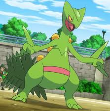
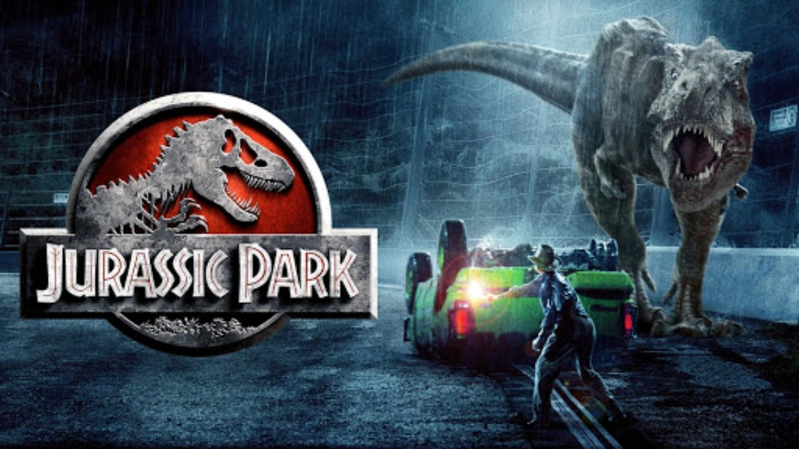

Introdução
Esse site tem o objetivo de fazer com que o leitor conheça um pouco mais o Gabriel "Gabiss" Garcez de Oliveira, eu mesmo. Nele, irei citar algumas de minhas principais habilidades e projetos pessoais, para que possam ter uma primeira impressão de como é o meu trabalho.
Agora falando um pouco mais de sobre mim, sou um programador buscando uma primeira oportunidade no mercado de trabalho. Tenho um grande apego por jogos, em especial jogos de cartas, e sonho em trabalhar no desenvolvimento de algum jogo do tipo.
Minhas Habilidades
- Conhecimentos Gerais - Tenho bons conhecimentos em áreas além da programação como, por exemplo, em história e bilogia;
- Lógica de Programação - Tenho conhecimento de várias liguagens de programação, boas práticas de escrita de código e organização de arquivos;
- Trabalho em Equipe - Tenho experiência em trabalhar com equipes, inclusive liderando alguns projetos;
- Raciocínio Lógico - Tenho capacidede de resolver questões de raciocínio;
- Gerenciamento de Banco de Dados - Tenho cerco conhecimento e experência com SGBD, em especialMySql e Postgres.
Fatos Curiosos Sobre Mim
- Pokémon Favorito: Sceptile, o melhor inicial de grama de história; 
- Cor Favorita: Ciano, não tem muita explicação, mas é isso.
- Número da Sorte: 7, meu número favorito desde criança, muito por conta do Grêmio.
- Comida Preferida: Hoje em dia fica um empate entre Sushi e Churrasco.
- Música Favorita: Cruel Summer da Taylor Swift, amor total pela música.
- Filme Favorito: Jurrassic Park 1, nada vai superar esse aqui, obra prima. 
Meus Projetos
Pessoais
Nome do Projeto: Medicapp
O projeto consiste em um site/app para controle do uso de medicamentos e de receituário médico.
Repositório do Projeto
Nome do Projeto: Hemocentro
Projeto para simular o funcionamento de um Hemocentro via terminal.
Repositório
do Projeto
Nome do Projeto: Medicapp
O projeto consiste em um site/app para controle do uso de medicamentos e de receituário médico.
Repositório do ProjetoNome do Projeto: Hemocentro
Projeto para simular o funcionamento de um Hemocentro via terminal.
Repositório do Projeto